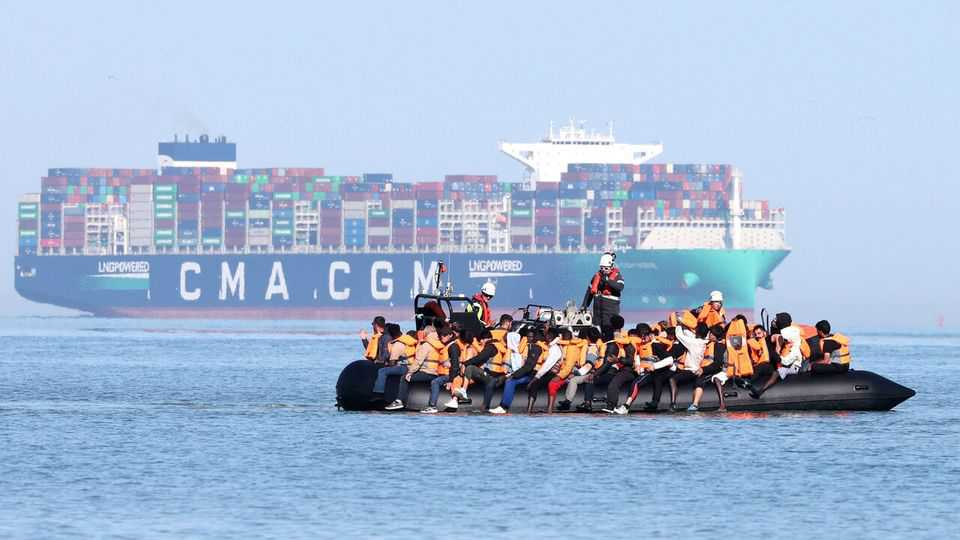
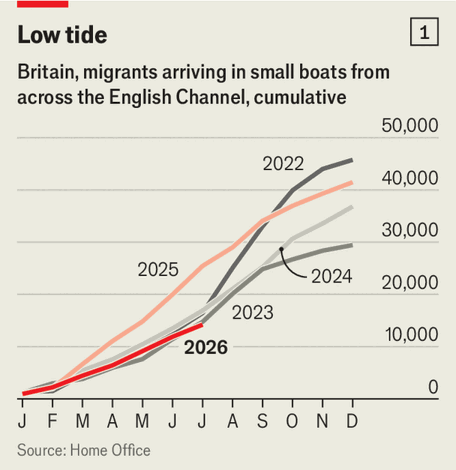
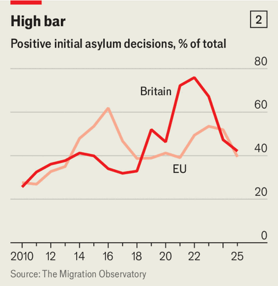

The English Channel is quieter than usual. Why?
Policy changes probably matter more than policing

Aug 6th 2026
With the white cliffs of Dover in the background and the sun on his face, Andy Burnham asserted on August 2nd that “progress is being made” against the smugglers who transport asylum-seekers across the English Channel. More police officers are assigned to disrupting the trade, the new prime minister pointed out. And the number of migrants has fallen.
It was a very different message from the one his predecessor usually delivered. Sir Keir Starmer’s statements about small boats were full of impotent fury and words such as “evil” and “misery”. The less saturnine Mr Burnham has a right to be cheerful, because the channel is indeed quieter than it was last year (see chart 1). “You have to go back to 2021 to find numbers as low as this,” says Peter Walsh of the Migration Observatory, a think-tank.

Funding from Britain has enabled France to put almost 1,000 officers on the coast. Increasingly they stop boats that are already in the water, with some migrants on board. On the other side of the channel, the Home Office claims that British officers were responsible for 1,138 “disruptions” of smuggling operations in the first quarter of this year (through arrests, asset seizures and the like). It was the highest quarterly tally for at least three years.
More assertive policing appears to have forced smugglers away from the beaches around Calais and Dunkirk, where many migrants camp. Utopia 56, a French organisation that assists migrants in distress, says that boats have recently departed from as far away as Yport in Normandy, almost 200km from Calais. Smugglers load boats in a rush, before the police can stop them. “The departures are more and more chaotic,” says a member of the group.
Yet the best indicator that smugglers are struggling would be a rise in the price of crossings. Of that there is little sign. Court cases, undercover journalism and police reports all suggest that asylum-seekers pay about €1,500 ($1,700) for passage, as they have done for the past few years. Ever adaptable, smugglers have started using bigger boats. On August 3rd one carrying 173 people set off, only to catch fire (the migrants were rescued).
Mr Walsh thinks that two other changes may have deterred asylum-seekers. Last September the Home Office suspended “family reunion” procedures, under which refugees could bring spouses and children to Britain. That probably made the country less attractive: illegal migration is so dangerous that men often travel alone, assuming they can send for their families later. A comparative study by Jan-Paul Brekke of the Norwegian Institute for Social Research and others suggests that stringent family policies suppress applications.

Britain looks at asylum-seekers with a harder eye, too. A few years ago it initially accepted a far higher proportion of claims than eu countries did. That is no longer true (see chart 2). In 2023 Afghans were almost always given protection: acceptances outnumbered refusals by almost 90 to one. Today Britain rejects more Afghans than it accepts. Many appeal successfully, and in practice it is hard to deport anybody to Afghanistan. But word may have got around that Britain tends to say no.
Even more important changes have been made overseas. The eu has tightened its borders, not least by cutting deals with transit countries in north Africa. According to Frontex, the border agency, irregular crossings dropped from 380,000 in 2023 to 178,000 in 2025. Crossings in the first half of this year were 37% lower than in the first half of 2025. There are simply fewer asylum-seekers available to smugglers in northern France. In this respect, as in so many others, Britain is part of Europe.■